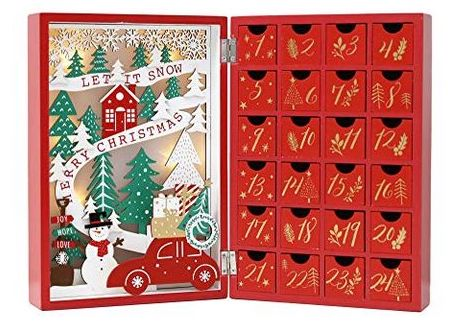
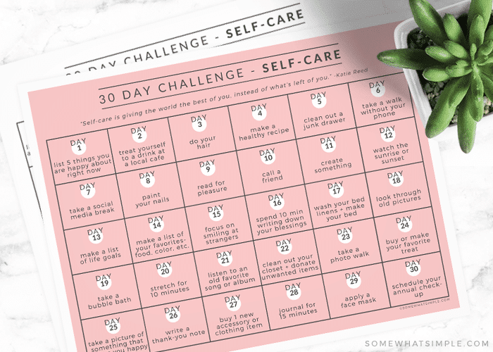
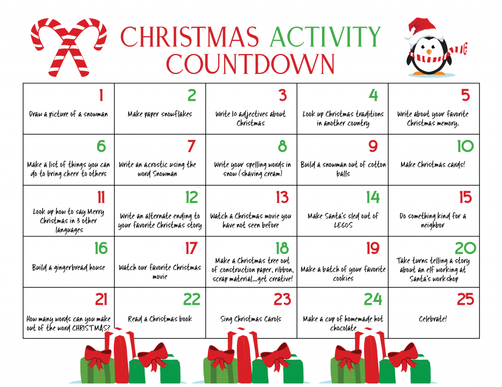
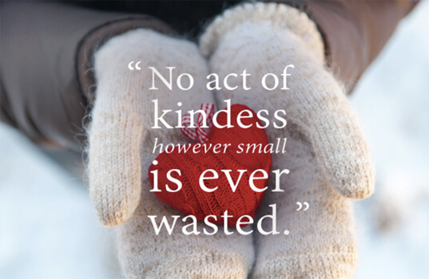

Christmas is my favorite holiday. I love the jingles on the street, the cozy atmosphere, gathering with friends and family, and even the days of waiting for the Christmas day to come. As a child, I used to get chocolate advent calendars or toy advent calendars to count days left till Christmas. The element of surprise and the daily delight of small gift brought a lot of happiness to me during the Christmas time. Now, I want to share this daily doses of happiness with more people in the community that I belong to.
With this goal in mind, for the final project, I will build a web-based Christmas kindness advent calendar. While most of the advent calendars are for, the happiness of the person who uses the advent calendar, since Christmas is the season of sharing and kindness, I want to make an advent calendar that encourages people practice a small act of kindness for the people around them. To make it interesting and fun, this challenges are genererated with Context Free Grammar, which adds some randomness and unexpectedness.
Hopefully, this project will help poeple have fun while completing the 30 days of challenges. Furthermore it will make the community around them to become a bit more kind and warm place during this time of cold winter. I am excited for this project as this would be a heartwarming and joyful experience for both people who share the act of kindness and people who receive the act of kindness.
Final Project Proposal
Author: Soojin Lee Date: 16, Nov, 2021
Christmas Kindness Advent Calendar
So random and creatively kind...
| Project Pitchdeck
Click here to access figma presentation.
| Inspirations & Visual Mood Board
   | Prototype & Visual Mock up

| CFG Ideas
subject: yourself | mom | dad | friend | pedestrian | teacher | driver | doctor | child | co-worker | anyone
number: 1 | 2 | 3 | 4 | 5 | 6 | 7 | 8 | 9 | 10
place: cafe | supermarket | elevator | park | bank | restaurant | kindergarten | street | library | parking lot
adjective: nearest | favorite | best | biggest | smallest | pretty | quiet | exquisite | special
what: compliment | chocolate | flower | starbucks drink | cookie | dollars | high five | card | smile
when:b morning | lunch | dinner | 3pm | before sleep | 3pm | 8am | midnight | noon | night | afternoon
number: 1 | 2 | 3 | 4 | 5 | 6 | 7 | 8 | 9 | 10
place: cafe | supermarket | elevator | park | bank | restaurant | kindergarten | street | library | parking lot
adjective: nearest | favorite | best | biggest | smallest | pretty | quiet | exquisite | special
what: compliment | chocolate | flower | starbucks drink | cookie | dollars | high five | card | smile
when:b morning | lunch | dinner | 3pm | before sleep | 3pm | 8am | midnight | noon | night | afternoon
Potential Kindness Prompts Randomly Generated using CFG:
- Give a smile to the 4th dog owner you meet.
- Buy 9 chocolates to the taxi driver.
- Give 10 dollars to the person you meet at the nearest cafe.
- Text "Have a great day" to the 6th person tagged on your instagram.
- Give a candel to the co-worker after lunch.
| Project Goals
- What is the project about?
- What is it?
- What is the context in which it will be experienced? Where, how and when?
- Who is the participant or audience?
- What is this project asking them to do?
- What is the duration of the experience?
- What do you want them to take away from the project?
This project is based on Context Free Grammar. It uses CFG to generate a text of random act of kindness. With these generated texts, I will be making a Christmas advent calendar that encourages people to compelete one act of kindness per each day throughout the December till the day of Christmas.
It is a webpage, an online Christmas Kindness Advent Calendar. The page consists of a 2022 December calendar, where each day has the text of a CFG generated kindness events.
People will be accessing this through the webpage during the time of the Christmas. From the day they access the calendar, they will be using it daily until the day of Christmas!
The prompts are targeted towards young adults and college students but it can be used by the wider community.
It is for people who care about the community, who loves Christmas, and people who wants to have a daily doses of joy and a heartwarming experience during the time of Christmas.
Kids can participate, but some of the prompts may be difficult for kids to complete as it is made for adults. Some people may not be familiar with the concept of advent calendar. So make sure I include the breif description.
Kids can participate, but some of the prompts may be difficult for kids to complete as it is made for adults. Some people may not be familiar with the concept of advent calendar. So make sure I include the breif description.
The project asks people to access the webpage to receive the advent calendar and complete the daily kindness challenges listed in the calendar for the entire month.
It will be a month-long experience for peoiple to practice kindness. However, since this project is meant to encourage and incentivize people to practice the act of kindness, there is no hard deadline. Individuals can interact with the calendar at their own time and be creative with how they choose to interact with the calendar. but ideally, they will be completing once challenge per day throughout the month December.
On top of everything else, I want it to be an enjoyable and fun experience for the people who interact with my project. I hope this would inspire them to be kind to community of people around them in a creative way. While practicing the daily act of kindness, I hope people to learn the great joy and happiness one can get from sharing kindness. Hopefully, they will continue practicing this in their daily life, inspire people around them to do it with them, where the kindness would spread like a ripple effect.
| Relevant Resources
Generating Event
API generated GIF
Project format (web-based) & Aesthetics
- Happy Valentine's Day A reference for web-based project
- It's a Shape Christmas A reference for online event calendar